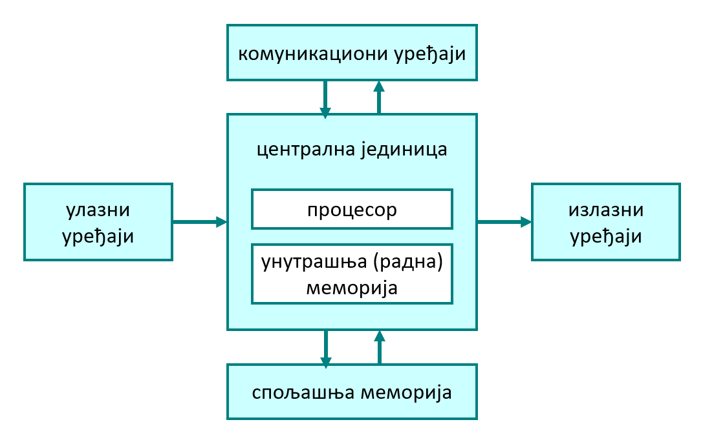
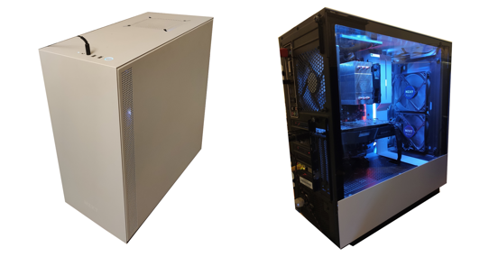
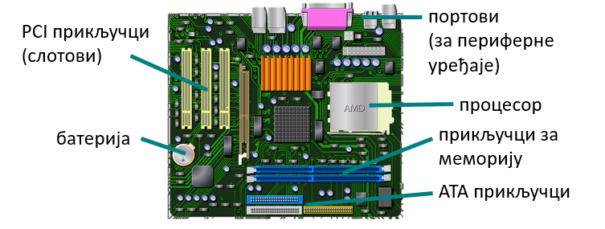
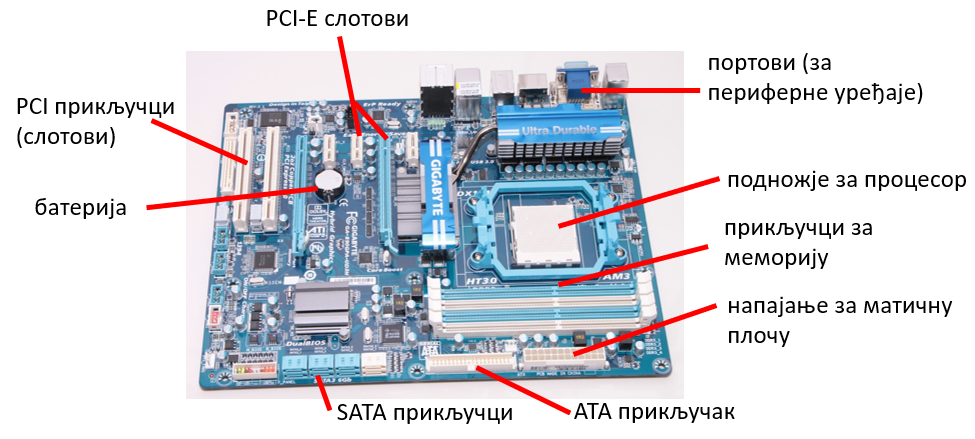
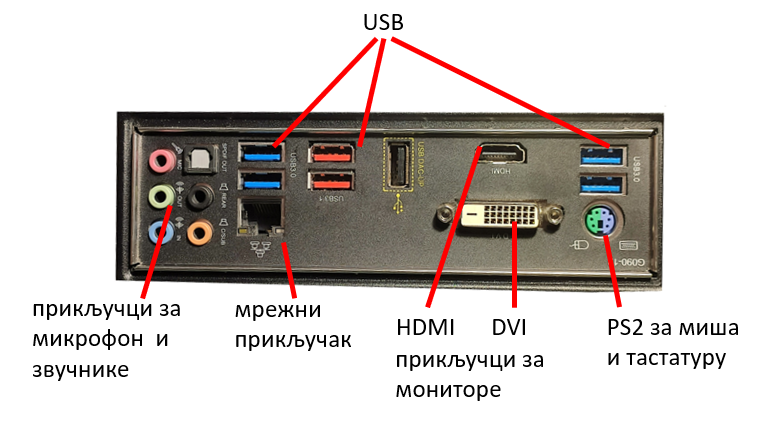
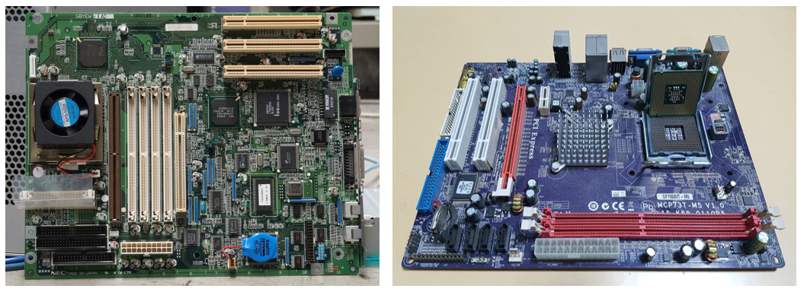
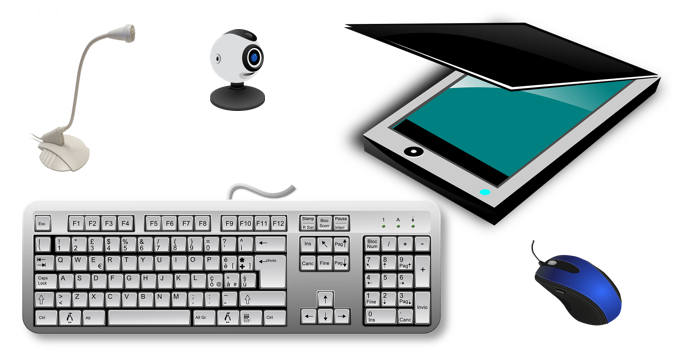
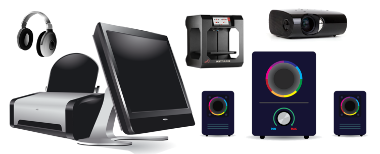
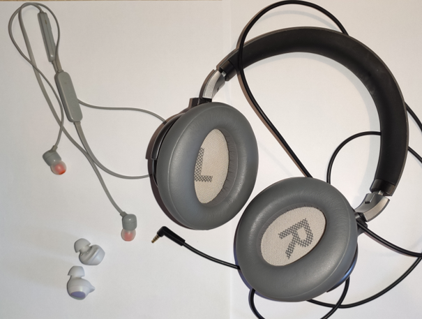

<!DOCTYPE html>
<html xmlns="http://www.w3.org/1999/xhtml" lang="sr-Cyrl"></html>
  <head>
    <meta charset="utf-8" />
    <meta name="viewport" content="width=device-width, initial-scale=1.0" />
    <title>Хардвер &#8212; 1_razred_IKT_DigitalnaPismenost</title>
    <link rel="stylesheet" href="../_static/pygments.css" type="text/css" />
    <link rel="stylesheet" href="../_static/basic.css" type="text/css" />
    <link rel="stylesheet" type="text/css" href="../_static/activecode.css" />
    <link rel="stylesheet" type="text/css" href="../_static/codemirror.css" />
    <link rel="stylesheet" type="text/css" href="../_static/clickable.css" />
    <link rel="stylesheet" type="text/css" href="../_static/pytutor.css" />
    <link rel="stylesheet" type="text/css" href="../_static/modal-basic.css" />
    <link rel="stylesheet" type="text/css" href="../_static/datafile.css" />
    <link rel="stylesheet" type="text/css" href="../_static/dragndrop.css" />
    <link rel="stylesheet" type="text/css" href="../_static/fitb.css" />
    <link rel="stylesheet" type="text/css" href="../_static/matrixeq.css" />
    <link rel="stylesheet" type="text/css" href="../_static/parsons.css" />
    <link rel="stylesheet" type="text/css" href="../_static/lib/prettify.css" />
    <link rel="stylesheet" type="text/css" href="../_static/poll.css" />
    <link rel="stylesheet" type="text/css" href="../_static/showEval.css" />
    <link rel="stylesheet" type="text/css" href="../_static/tabbedstuff.css" />
    <link rel="stylesheet" type="text/css" href="https://stackpath.bootstrapcdn.com/bootstrap/4.2.1/css/bootstrap.min.css" />
    <link rel="stylesheet" type="text/css" href="../_static/video.css" />
    <link rel="stylesheet" type="text/css" href="../_static/webgldemo.css" />
    <link rel="stylesheet" type="text/css" href="../_static/webglinteractive.css" />
    <link rel="stylesheet" type="text/css" href="../_static/karel.css" />
    <link rel="stylesheet" type="text/css" href="../_static/notes.css" />
    <link rel="stylesheet" href="../_static/user-highlights.css" type="text/css" />
    <link rel="stylesheet" href="https://use.fontawesome.com/releases/v5.1.1/css/all.css" type="text/css" />
    <link rel="stylesheet" href="../_static/bootstrap-4.0.0-dist/css/bootstrap.min.css" type="text/css" />
    <link rel="stylesheet" href="../_static/flatly.min.css" type="text/css" />
    <link rel="stylesheet" href="../_static/petlja.css" type="text/css" />
    <script id="documentation_options" data-url_root="../" src="../_static/documentation_options.js"></script>
    <script type="text/javascript" src="../_static/runestonebase.js"></script>
    <script type="text/javascript" src="../_static/jquery.js"></script>
    <script type="text/javascript" src="../_static/underscore.js"></script>
    <script type="text/javascript" src="../_static/doctools.js"></script>
    <script type="text/javascript" src="../_static/language_data.js"></script>
    <script type="text/javascript" src="../_static/jquery.highlight.js"></script>
    <script type="text/javascript" src="../_static/bookfuncs.js"></script>
    <script type="text/javascript" src="../_static/codemirror.js"></script>
    <script type="text/javascript" src="../_static/xml.js"></script>
    <script type="text/javascript" src="../_static/css.js"></script>
    <script type="text/javascript" src="../_static/python.js"></script>
    <script type="text/javascript" src="../_static/htmlmixed.js"></script>
    <script type="text/javascript" src="../_static/javascript.js"></script>
    <script type="text/javascript" src="../_static/jquery_i18n/CLDRPluralRuleParser.js"></script>
    <script type="text/javascript" src="../_static/jquery_i18n/jquery.i18n.js"></script>
    <script type="text/javascript" src="../_static/jquery_i18n/jquery.i18n.messagestore.js"></script>
    <script type="text/javascript" src="../_static/jquery_i18n/jquery.i18n.fallbacks.js"></script>
    <script type="text/javascript" src="../_static/jquery_i18n/jquery.i18n.language.js"></script>
    <script type="text/javascript" src="../_static/jquery_i18n/jquery.i18n.parser.js"></script>
    <script type="text/javascript" src="../_static/jquery_i18n/jquery.i18n.emitter.js"></script>
    <script type="text/javascript" src="../_static/jquery_i18n/jquery.i18n.emitter.bidi.js"></script>
    <script type="text/javascript" src="../_static/activecode-i18n.en.js"></script>
    <script type="text/javascript" src="../_static/skulpt.min.js"></script>
    <script type="text/javascript" src="../_static/skulpt-stdlib.js"></script>
    <script type="text/javascript" src="../_static/activecode.js"></script>
    <script type="text/javascript" src="../_static/clike.js"></script>
    <script type="text/javascript" src="../_static/timed_activecode.js"></script>
    <script type="text/javascript" src="../_static/animationbase.js"></script>
    <script type="text/javascript" src="../_static/mchoice.js"></script>
    <script type="text/javascript" src="../_static/timedmc.js"></script>
    <script type="text/javascript" src="../_static/timed.js"></script>
    <script type="text/javascript" src="../_static/mchoice-i18n.en.js"></script>
    <script type="text/javascript" src="../_static/clickable.js"></script>
    <script type="text/javascript" src="../_static/timedclickable.js"></script>
    <script type="text/javascript" src="../_static/d3.v2.min.js"></script>
    <script type="text/javascript" src="../_static/jquery.ba-bbq.min.js"></script>
    <script type="text/javascript" src="../_static/jquery.jsPlumb-1.3.10-all-min.js"></script>
    <script type="text/javascript" src="../_static/pytutor.js"></script>
    <script type="text/javascript" src="../_static/codelens.js"></script>
    <script type="text/javascript" src="../_static/datafile.js"></script>
    <script type="text/javascript" src="../_static/dragndrop.js"></script>
    <script type="text/javascript" src="../_static/timeddnd.js"></script>
    <script type="text/javascript" src="../_static/dragndrop-i18n.en.js"></script>
    <script type="text/javascript" src="../_static/fitb.js"></script>
    <script type="text/javascript" src="../_static/timedfitb.js"></script>
    <script type="text/javascript" src="../_static/fitb-i18n.en.js"></script>
    <script type="text/javascript" src="../_static/matrixeq.js"></script>
    <script type="text/javascript" src="../_static/lib/prettify.js"></script>
    <script type="text/javascript" src="../_static/lib/hammer.min.js"></script>
    <script type="text/javascript" src="../_static/parsons.js"></script>
    <script type="text/javascript" src="../_static/parsons-i18n.en.js"></script>
    <script type="text/javascript" src="../_static/timedparsons.js"></script>
    <script type="text/javascript" src="../_static/poll.js"></script>
    <script type="text/javascript" src="../_static/reveal.js"></script>
    <script type="text/javascript" src="../_static/shortanswer.js"></script>
    <script type="text/javascript" src="../_static/timed_shortanswer.js"></script>
    <script type="text/javascript" src="../_static/showEval.js"></script>
    <script type="text/javascript" src="../_static/tabbedstuff.js"></script>
    <script type="text/javascript" src="../_static/runestonevideo.js"></script>
    <script type="text/javascript" src="../_static/webglinteractive.js"></script>
    <script type="text/javascript" src="../_static/FileSaver.min.js"></script>
    <script type="text/javascript" src="../_static/Blob.js"></script>
    <script type="text/javascript" src="../_static/karelCorner.js"></script>
    <script type="text/javascript" src="../_static/karelRobot.js"></script>
    <script type="text/javascript" src="../_static/karelWorld.js"></script>
    <script type="text/javascript" src="../_static/karelRobotDrawer.js"></script>
    <script type="text/javascript" src="../_static/karelUI.js"></script>
    <script type="text/javascript" src="../_static/karel.js"></script>
    <script type="text/javascript" src="../_static/karel-i18n.en.js"></script>
    <script type="text/javascript" src="../_static/notes.js"></script>
    <script type="text/javascript" src="../_static/pygamelib-init.js"></script>
    <script type="text/javascript" src="../_static/blockly/blockly_compressed.js"></script>
    <script type="text/javascript" src="../_static/blockly/blocks_compressed.js"></script>
    <script type="text/javascript" src="../_static/blockly/python_compressed.js"></script>
    <script type="text/javascript" src="../_static/blockly/msg-sr.js"></script>
    <script type="text/javascript" src="../_static/blockpy/utilities.js"></script>
    <script type="text/javascript" src="../_static/blockpy/python_errors.js"></script>
    <script type="text/javascript" src="../_static/blockpy/ast_node_visitor.js"></script>
    <script type="text/javascript" src="../_static/blockpy/abstract_interpreter.js"></script>
    <script type="text/javascript" src="../_static/blockpy/pytifa.js"></script>
    <script type="text/javascript" src="../_static/blockpy/abstract_interpreter_definitions.js"></script>
    <script type="text/javascript" src="../_static/blockpy/python_to_blockly.js"></script>
    <script type="text/javascript" src="../_static/blockpy/imported.js"></script>
    <script type="text/javascript" src="../_static/blockpy/blocks/class.js"></script>
    <script type="text/javascript" src="../_static/blockpy/blocks/comment.js"></script>
    <script type="text/javascript" src="../_static/blockpy/blocks/comprehensions.js"></script>
    <script type="text/javascript" src="../_static/blockpy/blocks/dict.js"></script>
    <script type="text/javascript" src="../_static/blockpy/blocks/if.js"></script>
    <script type="text/javascript" src="../_static/blockpy/blocks/io.js"></script>
    <script type="text/javascript" src="../_static/blockpy/blocks/lists.js"></script>
    <script type="text/javascript" src="../_static/blockpy/blocks/sets.js"></script>
    <script type="text/javascript" src="../_static/blockpy/blocks/loops.js"></script>
    <script type="text/javascript" src="../_static/blockpy/blocks/parking.js"></script>
    <script type="text/javascript" src="../_static/blockpy/blocks/tuple.js"></script>
    <script type="text/javascript" src="../_static/blockpy/blocks/turtles.js"></script>
    <script type="text/javascript" src="../_static/blockpy/blocks/text.js"></script>
    <script type="text/javascript" src="../_static/blockpy-modal.js"></script>
    <script type="text/javascript" src="../_static/translations.js"></script>
    <script async="async" type="text/javascript" src="https://cdnjs.cloudflare.com/ajax/libs/mathjax/2.7.5/latest.js?config=TeX-AMS-MML_HTMLorMML"></script>
    <script type="text/javascript" src="../_static/mchoice-i18n.sr-Cyrl.js"></script>
    <script type="text/javascript" src="../_static/mchoice-i18n.sr.js"></script>
    <script type="text/javascript" src="../_static/mchoice-i18n.sr-Latn.js"></script>
    <script type="text/javascript" src="../_static/dragndrop-i18n.sr-Cyrl.js"></script>
    <script type="text/javascript" src="../_static/dragndrop-i18n.sr.js"></script>
    <script type="text/javascript" src="../_static/dragndrop-i18n.sr-Latn.js"></script>
    <script type="text/javascript" src="../_static/fitb-i18n.sr-Cyrl.js"></script>
    <script type="text/javascript" src="../_static/fitb-i18n.sr.js"></script>
    <script type="text/javascript" src="../_static/fitb-i18n.sr-Latn.js"></script>
    <script type="text/javascript" src="../_static/parsons-i18n.sr-Cyrl.js"></script>
    <script type="text/javascript" src="../_static/parsons-i18n.sr.js"></script>
    <script type="text/javascript" src="../_static/parsons-i18n.sr-Latn.js"></script>
    <script type="text/javascript" src="../_static/activecode-i18n.sr-Cyrl.js"></script>
    <script type="text/javascript" src="../_static/activecode-i18n.sr.js"></script>
    <script type="text/javascript" src="../_static/activecode-i18n.sr-Latn.js"></script>
    <script type="text/javascript" src="../_static/jquery-ui-1.10.3.custom.min.js"></script>
    <script type="text/javascript" src="../_static/jquery-fix.js"></script>
    <script type="text/javascript" src="../_static/bootstrap-4.0.0-dist/js/bootstrap.min.js"></script>
    <script type="text/javascript" src="../_static/bootstrap-4.0.0-dist/js/bootstrap.bundle.min.js"></script>
    <script type="text/javascript" src="../_static/bootstrap-sphinx.js"></script>
    <script type="text/javascript" src="../_static/waypoints.min.js"></script>
    <script type="text/javascript" src="../_static/rangy-core.js"></script>
    <script type="text/javascript" src="../_static/rangy-textrange.js"></script>
    <script type="text/javascript" src="../_static/rangy-cssclassapplier.js"></script>
    <script type="text/javascript" src="../_static/user-highlights.js"></script>
    <script type="text/javascript" src="../_static/jquery.idle-timer.js"></script>
    <script type="text/javascript" src="../_static/processing-1.4.1.min.js"></script>
    <script type="text/javascript" src="../_static/jquery.hotkey.js"></script>
    <script type="text/javascript" src="../_static/jquery-migrate-1.2.1.min.js"></script>
    <script type="text/javascript" src="../_static/course-errors.js"></script>
    <script type="text/javascript" src="../_static/petlja.js"></script>
    <link rel="index" title="Index" href="../genindex.html" />
    <link rel="search" title="Search" href="../search.html" />
    <link rel="next" title="Квиз 2.3" href="zkviz_8.html" />
    <link rel="prev" title="Садржај лекције 2.3" href="uvod_lekcija_8.html" />
<meta charset='utf-8'>
<meta http-equiv='X-UA-Compatible' content='IE=edge,chrome=1'>
<meta content='width=device-width, initial-scale=1.0, maximum-scale=1.0, user-scalable=0' name='viewport' />
<link rel="shortcut icon" href="../_static/favicon.ico" type="image/ico" />
<script type="text/javascript">
  eBookConfig = {};
  eBookConfig.host = 'http://127.0.0.1:8000' ? 'http://127.0.0.1:8000' : 'http://127.0.0.1:8000';
  eBookConfig.app = eBookConfig.host + '/runestone';
  eBookConfig.ajaxURL = eBookConfig.app + '/ajax/';
  eBookConfig.course = '1_razred_IKT_DigitalnaPismenost';
  eBookConfig.logLevel = '0';
  eBookConfig.loginRequired = 'false';
  eBookConfig.build_info = "";
  eBookConfig.isLoggedIn = false;
  eBookConfig.useRunestoneServices = 'false';
  eBookConfig.python3 = 'true';
  eBookConfig.basecourse = 'Primer_kurs';
  eBookConfig.runestone_version = '';
  eBookConfig.imagesDir = '../_images/';
  eBookConfig.staticDir = '../_static/';
  if (typeof (Sk) != "undefined")
    Sk.imgPath = eBookConfig.imagesDir;
</script>

<div id="fb-root"></div>


  </head><body>


<!-- Begin navbar -->

<nav id="navbar" class="navbar navbar-default navbar-fixed-top" role="navigation">

  <a href="https://petlja.org"> </a>
  <a href="https://petlja.org/net.kabinet"> </a>
  <div class="container">

    <div class="navbar-header">
      <button type="button" class="navbar-toggle collapsed" data-toggle="collapse"
        data-target="#bs-example-navbar-collapse-1">
        <span class="sr-only">Toggle navigation</span>
        <span class="icon-bar"></span>
        <span class="icon-bar"></span>
        <span class="icon-bar"></span>
      </button>
    </div>

    <div class="collapse navbar-collapse" id="bs-example-navbar-collapse-1"
      style="margin-left: 25px; text-align: center;">
      <ul class="nav navbar-nav">
        <li class="active"><a
            href="../">1_razred_IKT_DigitalnaPismenost</a>
        </li>
      </ul>
    </div>
  </div>
</nav>

<div style="margin-top: 65px;font-size: 20px; width: 20%; float: left; height: calc(100vh - 115px);">
  
      <div class="sphinxsidebar" role="navigation" aria-label="main navigation">
        <div class="sphinxsidebarwrapper"><ul>
    
    <div class="lecture-div" id=lecture-аУвод>
        <i class="fas fa-caret-right caret-position"></i>
        <i class="fas fa-caret-down caret-position d-none"></i>
        <h5>Увод</h5>
    </div>

    <div class="d-none">
        
        
        <a href=../аУвод/uvodni_tekst.html>
        
        <div class="activity-div" id=activity-uvodni_tekst>
            
            <i class="fas fa-file-alt activity-icon"></i>
            
            Увод у курс
        </div>
    </a>
    

    </diV>
    
    <div class="lecture-div" id=lecture-Тема1>
        <i class="fas fa-caret-right caret-position"></i>
        <i class="fas fa-caret-down caret-position d-none"></i>
        <h5>1. Информационо - комуникационе технологије у савременом друштву</h5>
    </div>

    <div class="d-none">
        
        
        <a href=../Тема1/tekst_tema_1.html>
        
        <div class="activity-div" id=activity-tekst_tema_1>
            
            <i class="fas fa-file-alt activity-icon"></i>
            
            Садржај теме 1
        </div>
    </a>
    

    </diV>
    
    <div class="lecture-div" id=lecture-Лекција1>
        <i class="fas fa-caret-right caret-position"></i>
        <i class="fas fa-caret-down caret-position d-none"></i>
        <h5>1.1 Информационо-комуникационе технологије</h5>
    </div>

    <div class="d-none">
        
        
        <a href=../Лекција1/uvod_lekcija_1.html>
        
        <div class="activity-div" id=activity-uvod_lekcija_1>
            
            <i class="fas fa-file-alt activity-icon"></i>
            
            Садржај лекције 1.1
        </div>
    </a>
    
        
        <a href=../Лекција1/IKT_lekcija_1.html>
        
        <div class="activity-div" id=activity-IKT_lekcija_1>
            
            <i class="fas fa-file-alt activity-icon"></i>
            
            1.1 ИКТ у савременом друштву
        </div>
    </a>
    
        
        <a href=../Лекција1/zkviz_1.html>
        
        <div class="activity-div" id=activity-zkviz_1>
            
            <i class="far fa-question-circle activity-icon"></i>
            
            Квиз 1.1
        </div>
    </a>
    

    </diV>
    
    <div class="lecture-div" id=lecture-Лекција2>
        <i class="fas fa-caret-right caret-position"></i>
        <i class="fas fa-caret-down caret-position d-none"></i>
        <h5>1.2 Рачунарске мреже и интернет</h5>
    </div>

    <div class="d-none">
        
        
        <a href=../Лекција2/uvod_lekcija_2.html>
        
        <div class="activity-div" id=activity-uvod_lekcija_2>
            
            <i class="fas fa-file-alt activity-icon"></i>
            
            Садржај лекције 1.2
        </div>
    </a>
    
        
        <a href=../Лекција2/mreze_lekcija_2.html>
        
        <div class="activity-div" id=activity-mreze_lekcija_2>
            
            <i class="fas fa-file-alt activity-icon"></i>
            
            Рачунарске мреже и интернет
        </div>
    </a>
    
        
        <a href=../Лекција2/zkviz_2.html>
        
        <div class="activity-div" id=activity-zkviz_2>
            
            <i class="far fa-question-circle activity-icon"></i>
            
            Квиз 1.2
        </div>
    </a>
    

    </diV>
    
    <div class="lecture-div" id=lecture-Лекција3>
        <i class="fas fa-caret-right caret-position"></i>
        <i class="fas fa-caret-down caret-position d-none"></i>
        <h5>1.3 Коришћење интернета</h5>
    </div>

    <div class="d-none">
        
        
        <a href=../Лекција3/uvod_lekcija_3.html>
        
        <div class="activity-div" id=activity-uvod_lekcija_3>
            
            <i class="fas fa-file-alt activity-icon"></i>
            
            Садржај лекције 1.3
        </div>
    </a>
    
        
        <a href=../Лекција3/internet_servisi_lekcija_3.html>
        
        <div class="activity-div" id=activity-internet_servisi_lekcija_3>
            
            <i class="fas fa-file-alt activity-icon"></i>
            
            Интернет сервиси
        </div>
    </a>
    
        
        <a href=../Лекција3/komunikacija_na_internetu_lekcija_3.html>
        
        <div class="activity-div" id=activity-komunikacija_na_internetu_lekcija_3>
            
            <i class="fas fa-file-alt activity-icon"></i>
            
            Начини и правила комуникације и лепог понашања на интернету
        </div>
    </a>
    
        
        <a href=../Лекција3/zkviz_3.html>
        
        <div class="activity-div" id=activity-zkviz_3>
            
            <i class="far fa-question-circle activity-icon"></i>
            
            Квиз 1.3
        </div>
    </a>
    

    </diV>
    
    <div class="lecture-div" id=lecture-Лекција4>
        <i class="fas fa-caret-right caret-position"></i>
        <i class="fas fa-caret-down caret-position d-none"></i>
        <h5>1.4 Ауторска права, веродостојност информација, заштита и безбедност</h5>
    </div>

    <div class="d-none">
        
        
        <a href=../Лекција4/uvod_lekcija_4.html>
        
        <div class="activity-div" id=activity-uvod_lekcija_4>
            
            <i class="fas fa-file-alt activity-icon"></i>
            
            Садржај лекције 1.4
        </div>
    </a>
    
        
        <a href=../Лекција4/prava_verodostojnost_lekcija_4.html>
        
        <div class="activity-div" id=activity-prava_verodostojnost_lekcija_4>
            
            <i class="fas fa-file-alt activity-icon"></i>
            
            Ауторска права и веродостојност информација
        </div>
    </a>
    
        
        <a href=../Лекција4/zastita_bezbednost_lekcija_4.html>
        
        <div class="activity-div" id=activity-zastita_bezbednost_lekcija_4>
            
            <i class="fas fa-file-alt activity-icon"></i>
            
            Заштита личних података и приватност
        </div>
    </a>
    
        
        <a href=../Лекција4/uticaji_lekcija_4.html>
        
        <div class="activity-div" id=activity-uticaji_lekcija_4>
            
            <i class="fas fa-file-alt activity-icon"></i>
            
            Утицаји ИКТ на здравље и околину
        </div>
    </a>
    
        
        <a href=../Лекција4/sve_boje_lekcija_4.html>
        
        <div class="activity-div" id=activity-sve_boje_lekcija_4>
            
            <i class="fas fa-file-alt activity-icon"></i>
            
            Све боје интернета
        </div>
    </a>
    
        
        <a href=../Лекција4/zkviz_4.html>
        
        <div class="activity-div" id=activity-zkviz_4>
            
            <i class="far fa-question-circle activity-icon"></i>
            
            Квиз 1.4
        </div>
    </a>
    

    </diV>
    
    <div class="lecture-div" id=lecture-Лекција5>
        <i class="fas fa-caret-right caret-position"></i>
        <i class="fas fa-caret-down caret-position d-none"></i>
        <h5>1.5 Развој ИКТ</h5>
    </div>

    <div class="d-none">
        
        
        <a href=../Лекција5/uvod_lekcija_5.html>
        
        <div class="activity-div" id=activity-uvod_lekcija_5>
            
            <i class="fas fa-file-alt activity-icon"></i>
            
            Садржај лекције 1.5
        </div>
    </a>
    
        
        <a href=../Лекција5/istorijski_razvoj_lekcija_5.html>
        
        <div class="activity-div" id=activity-istorijski_razvoj_lekcija_5>
            
            <i class="fas fa-file-alt activity-icon"></i>
            
            Историјски развој ИКТ
        </div>
    </a>
    
        
        <a href=../Лекција5/generacije_elektronskih_lekcija_5.html>
        
        <div class="activity-div" id=activity-generacije_elektronskih_lekcija_5>
            
            <i class="fas fa-file-alt activity-icon"></i>
            
            Генерације електронских рачунара
        </div>
    </a>
    
        
        <a href=../Лекција5/zkviz_5.html>
        
        <div class="activity-div" id=activity-zkviz_5>
            
            <i class="far fa-question-circle activity-icon"></i>
            
            Квиз 1.5
        </div>
    </a>
    

    </diV>
    
    <div class="lecture-div" id=lecture-Тема2>
        <i class="fas fa-caret-right caret-position"></i>
        <i class="fas fa-caret-down caret-position d-none"></i>
        <h5>2. Рачунарство</h5>
    </div>

    <div class="d-none">
        
        
        <a href=../Тема2/tekst_tema_2.html>
        
        <div class="activity-div" id=activity-tekst_tema_2>
            
            <i class="fas fa-file-alt activity-icon"></i>
            
            Садржај теме 2
        </div>
    </a>
    

    </diV>
    
    <div class="lecture-div" id=lecture-Лекција6>
        <i class="fas fa-caret-right caret-position"></i>
        <i class="fas fa-caret-down caret-position d-none"></i>
        <h5>2.1 Принципи рада рачунара</h5>
    </div>

    <div class="d-none">
        
        
        <a href=../Лекција6/uvod_lekcija_6.html>
        
        <div class="activity-div" id=activity-uvod_lekcija_6>
            
            <i class="fas fa-file-alt activity-icon"></i>
            
            Садржај лекције 2.1
        </div>
    </a>
    
        
        <a href=../Лекција6/kako_rade_računari_lekcija_6.html>
        
        <div class="activity-div" id=activity-kako_rade_računari_lekcija_6>
            
            <i class="fas fa-file-alt activity-icon"></i>
            
            Како раде рачунари
        </div>
    </a>
    
        
        <a href=../Лекција6/predstavljanje_podataka_lekcija_6.html>
        
        <div class="activity-div" id=activity-predstavljanje_podataka_lekcija_6>
            
            <i class="fas fa-file-alt activity-icon"></i>
            
            Представљање података у рачунару
        </div>
    </a>
    
        
        <a href=../Лекција6/zkviz_6.html>
        
        <div class="activity-div" id=activity-zkviz_6>
            
            <i class="far fa-question-circle activity-icon"></i>
            
            Квиз 2.1
        </div>
    </a>
    

    </diV>
    
    <div class="lecture-div" id=lecture-Лекција7>
        <i class="fas fa-caret-right caret-position"></i>
        <i class="fas fa-caret-down caret-position d-none"></i>
        <h5>2.2 Представљање бројева и рачунање са различитим основама</h5>
    </div>

    <div class="d-none">
        
        
        <a href=../Лекција7/uvod_lekcija_7.html>
        
        <div class="activity-div" id=activity-uvod_lekcija_7>
            
            <i class="fas fa-file-alt activity-icon"></i>
            
            Садржај лекције 2.2
        </div>
    </a>
    
        
        <a href=../Лекција7/predstavljanje_racunanje_lekcija_7.html>
        
        <div class="activity-div" id=activity-predstavljanje_racunanje_lekcija_7>
            
            <i class="fas fa-file-alt activity-icon"></i>
            
            Представљање бројева и рачунање са различитим основама
        </div>
    </a>
    
        
        <a href=../Лекција7/zkviz_7.html>
        
        <div class="activity-div" id=activity-zkviz_7>
            
            <i class="far fa-question-circle activity-icon"></i>
            
            Квиз 2.2
        </div>
    </a>
    

    </diV>
    
    <div class="lecture-div" id=lecture-Лекција8>
        <i class="fas fa-caret-right caret-position"></i>
        <i class="fas fa-caret-down caret-position d-none"></i>
        <h5>2.3 Хардверске компоненте рачунарских система</h5>
    </div>

    <div class="d-none">
        
        
        <a href=../Лекција8/uvod_lekcija_8.html>
        
        <div class="activity-div" id=activity-uvod_lekcija_8>
            
            <i class="fas fa-file-alt activity-icon"></i>
            
            Садржај лекције 2.3
        </div>
    </a>
    
        
        <a href=../Лекција8/hardver_lekcija_8.html>
        
        <div class="activity-div" id=activity-hardver_lekcija_8>
            
            <i class="fas fa-file-alt activity-icon"></i>
            
            Хардвер
        </div>
    </a>
    
        
        <a href=../Лекција8/zkviz_8.html>
        
        <div class="activity-div" id=activity-zkviz_8>
            
            <i class="far fa-question-circle activity-icon"></i>
            
            Квиз 2.3
        </div>
    </a>
    

    </diV>
    
    <div class="lecture-div" id=lecture-Лекција9>
        <i class="fas fa-caret-right caret-position"></i>
        <i class="fas fa-caret-down caret-position d-none"></i>
        <h5>2.4 Софтверске компоненте рачунарских система</h5>
    </div>

    <div class="d-none">
        
        
        <a href=../Лекција9/uvod_lekcija_9.html>
        
        <div class="activity-div" id=activity-uvod_lekcija_9>
            
            <i class="fas fa-file-alt activity-icon"></i>
            
            Садржај лекције 2.4
        </div>
    </a>
    
        
        <a href=../Лекција9/softver_lekcija_9.html>
        
        <div class="activity-div" id=activity-softver_lekcija_9>
            
            <i class="fas fa-file-alt activity-icon"></i>
            
            Софтвер
        </div>
    </a>
    
        
        <a href=../Лекција9/zkviz_9.html>
        
        <div class="activity-div" id=activity-zkviz_9>
            
            <i class="far fa-question-circle activity-icon"></i>
            
            Квиз 2.4
        </div>
    </a>
    

    </diV>
    
    <div class="lecture-div" id=lecture-Тема3>
        <i class="fas fa-caret-right caret-position"></i>
        <i class="fas fa-caret-down caret-position d-none"></i>
        <h5>3. Организација података и прилагођавање радног окружења</h5>
    </div>

    <div class="d-none">
        
        
        <a href=../Тема3/tekst_tema_3.html>
        
        <div class="activity-div" id=activity-tekst_tema_3>
            
            <i class="fas fa-file-alt activity-icon"></i>
            
            Садржај теме 3
        </div>
    </a>
    

    </diV>
    
    <div class="lecture-div" id=lecture-Лекција10>
        <i class="fas fa-caret-right caret-position"></i>
        <i class="fas fa-caret-down caret-position d-none"></i>
        <h5>3.1 Графички кориснички интерфејс</h5>
    </div>

    <div class="d-none">
        
        
        <a href=../Лекција10/uvod_lekcija_10.html>
        
        <div class="activity-div" id=activity-uvod_lekcija_10>
            
            <i class="fas fa-file-alt activity-icon"></i>
            
            Садржај лекције 3.1
        </div>
    </a>
    
        
        <a href=../Лекција10/gki_lekcija_10.html>
        
        <div class="activity-div" id=activity-gki_lekcija_10>
            
            <i class="fas fa-file-alt activity-icon"></i>
            
            Графички кориснички интерфејс - основни елементи
        </div>
    </a>
    
        
        <a href=../Лекција10/gki_podešavanja_lekcija_10.html>
        
        <div class="activity-div" id=activity-gki_podešavanja_lekcija_10>
            
            <i class="fas fa-file-alt activity-icon"></i>
            
            Графички кориснички интерфејс - основна подешавања
        </div>
    </a>
    
        
        <a href=../Лекција10/zkviz_10.html>
        
        <div class="activity-div" id=activity-zkviz_10>
            
            <i class="far fa-question-circle activity-icon"></i>
            
            Квиз 3.1
        </div>
    </a>
    

    </diV>
    
    <div class="lecture-div" id=lecture-Лекција11>
        <i class="fas fa-caret-right caret-position"></i>
        <i class="fas fa-caret-down caret-position d-none"></i>
        <h5>3.2 Рад са документима и системом датотека</h5>
    </div>

    <div class="d-none">
        
        
        <a href=../Лекција11/uvod_lekcija_11.html>
        
        <div class="activity-div" id=activity-uvod_lekcija_11>
            
            <i class="fas fa-file-alt activity-icon"></i>
            
            Садржај лекције 3.2
        </div>
    </a>
    
        
        <a href=../Лекција11/dokumenti_lekcija_11.html>
        
        <div class="activity-div" id=activity-dokumenti_lekcija_11>
            
            <i class="fas fa-file-alt activity-icon"></i>
            
            Рад са документима и системом датотека
        </div>
    </a>
    
        
        <a href=../Лекција11/zkviz_11.html>
        
        <div class="activity-div" id=activity-zkviz_11>
            
            <i class="far fa-question-circle activity-icon"></i>
            
            Квиз 3.2
        </div>
    </a>
    

    </diV>
    
    <div class="lecture-div" id=lecture-Лекција12>
        <i class="fas fa-caret-right caret-position"></i>
        <i class="fas fa-caret-down caret-position d-none"></i>
        <h5>3.3 Архивирање, слање, чување, заштита.</h5>
    </div>

    <div class="d-none">
        
        
        <a href=../Лекција12/uvod_lekcija_12.html>
        
        <div class="activity-div" id=activity-uvod_lekcija_12>
            
            <i class="fas fa-file-alt activity-icon"></i>
            
            Садржај лекције 3.3
        </div>
    </a>
    
        
        <a href=../Лекција12/arhiviranje_slanje_lekcija_12.html>
        
        <div class="activity-div" id=activity-arhiviranje_slanje_lekcija_12>
            
            <i class="fas fa-file-alt activity-icon"></i>
            
            Архивирање, слање и чување датотека.
        </div>
    </a>
    
        
        <a href=../Лекција12/dokumenti_oblak_lekcija_12.html>
        
        <div class="activity-div" id=activity-dokumenti_oblak_lekcija_12>
            
            <i class="fas fa-file-alt activity-icon"></i>
            
            Рад са документима и системом датотека „у облаку”
        </div>
    </a>
    
        
        <a href=../Лекција12/zastita_lekcija_12.html>
        
        <div class="activity-div" id=activity-zastita_lekcija_12>
            
            <i class="fas fa-file-alt activity-icon"></i>
            
            Средства и методе заштите рачунара и информација
        </div>
    </a>
    
        
        <a href=../Лекција12/zkviz_12.html>
        
        <div class="activity-div" id=activity-zkviz_12>
            
            <i class="far fa-question-circle activity-icon"></i>
            
            Квиз 3.3
        </div>
    </a>
    

    </diV>
    
    <div class="lecture-div" id=lecture-Тема4>
        <i class="fas fa-caret-right caret-position"></i>
        <i class="fas fa-caret-down caret-position d-none"></i>
        <h5>4. Креирање и уређевање дигиталних докумената</h5>
    </div>

    <div class="d-none">
        
        
        <a href=../Тема4/tekst_tema_4.html>
        
        <div class="activity-div" id=activity-tekst_tema_4>
            
            <i class="fas fa-file-alt activity-icon"></i>
            
            Садржај теме 4
        </div>
    </a>
    

    </diV>
    
    <div class="lecture-div" id=lecture-ЛекцијаW1>
        <i class="fas fa-caret-right caret-position"></i>
        <i class="fas fa-caret-down caret-position d-none"></i>
        <h5>4.1 Креирање, уређивање и форматирање дигиталних текстова</h5>
    </div>

    <div class="d-none">
        
        
        <a href=../ЛекцијаW1/uvod_lekcija_w1.html>
        
        <div class="activity-div" id=activity-uvod_lekcija_w1>
            
            <i class="fas fa-file-alt activity-icon"></i>
            
            Садржај лекције 4.1
        </div>
    </a>
    
        
        <a href=../ЛекцијаW1/tekst_lekcija_w1.html>
        
        <div class="activity-div" id=activity-tekst_lekcija_w1>
            
            <i class="fas fa-file-alt activity-icon"></i>
            
            Креирање, уређивање и форматирање дигиталних текстова
        </div>
    </a>
    
        
        <a href=../ЛекцијаW1/zkviz_w1.html>
        
        <div class="activity-div" id=activity-zkviz_w1>
            
            <i class="fas fa-file-alt activity-icon"></i>
            
            Задаци 4.1
        </div>
    </a>
    

    </diV>
    
    <div class="lecture-div" id=lecture-ЛекцијаW2>
        <i class="fas fa-caret-right caret-position"></i>
        <i class="fas fa-caret-down caret-position d-none"></i>
        <h5>4.2 Форматирање параграфа</h5>
    </div>

    <div class="d-none">
        
        
        <a href=../ЛекцијаW2/uvod_lekcija_w2.html>
        
        <div class="activity-div" id=activity-uvod_lekcija_w2>
            
            <i class="fas fa-file-alt activity-icon"></i>
            
            Садржај лекције 4.2
        </div>
    </a>
    
        
        <a href=../ЛекцијаW2/tekst_lekcija_w2.html>
        
        <div class="activity-div" id=activity-tekst_lekcija_w2>
            
            <i class="fas fa-file-alt activity-icon"></i>
            
            Форматирање параграфа
        </div>
    </a>
    
        
        <a href=../ЛекцијаW2/zkviz_w2.html>
        
        <div class="activity-div" id=activity-zkviz_w2>
            
            <i class="fas fa-file-alt activity-icon"></i>
            
            Задаци 4.2
        </div>
    </a>
    

    </diV>
    
    <div class="lecture-div" id=lecture-ЛекцијаW3>
        <i class="fas fa-caret-right caret-position"></i>
        <i class="fas fa-caret-down caret-position d-none"></i>
        <h5>4.3 Посебни елементи у тексту</h5>
    </div>

    <div class="d-none">
        
        
        <a href=../ЛекцијаW3/uvod_lekcija_w3.html>
        
        <div class="activity-div" id=activity-uvod_lekcija_w3>
            
            <i class="fas fa-file-alt activity-icon"></i>
            
            Садржај лекције 4.3
        </div>
    </a>
    
        
        <a href=../ЛекцијаW3/tekst_lekcija_slike_w3.html>
        
        <div class="activity-div" id=activity-tekst_lekcija_slike_w3>
            
            <i class="fas fa-file-alt activity-icon"></i>
            
            Уметање слика и облика
        </div>
    </a>
    
        
        <a href=../ЛекцијаW3/tekst_lekcija_tabele_w3.html>
        
        <div class="activity-div" id=activity-tekst_lekcija_tabele_w3>
            
            <i class="fas fa-file-alt activity-icon"></i>
            
            Уметање табела
        </div>
    </a>
    
        
        <a href=../ЛекцијаW3/tekst_lekcija_formule_w3.html>
        
        <div class="activity-div" id=activity-tekst_lekcija_formule_w3>
            
            <i class="fas fa-file-alt activity-icon"></i>
            
            Уметање симбола и формула
        </div>
    </a>
    
        
        <a href=../ЛекцијаW3/zkviz_w3.html>
        
        <div class="activity-div" id=activity-zkviz_w3>
            
            <i class="fas fa-file-alt activity-icon"></i>
            
            Задаци 4.3
        </div>
    </a>
    

    </diV>
    
    <div class="lecture-div" id=lecture-ЛекцијаW4>
        <i class="fas fa-caret-right caret-position"></i>
        <i class="fas fa-caret-down caret-position d-none"></i>
        <h5>4.4 Логичка структура текстуалног документа</h5>
    </div>

    <div class="d-none">
        
        
        <a href=../ЛекцијаW4/uvod_lekcija_w4.html>
        
        <div class="activity-div" id=activity-uvod_lekcija_w4>
            
            <i class="fas fa-file-alt activity-icon"></i>
            
            Садржај лекције 4.4
        </div>
    </a>
    
        
        <a href=../ЛекцијаW4/tekst_lekcija_w4.html>
        
        <div class="activity-div" id=activity-tekst_lekcija_w4>
            
            <i class="fas fa-file-alt activity-icon"></i>
            
            Логичка структура текстуалног документа
        </div>
    </a>
    
        
        <a href=../ЛекцијаW4/zkviz_w4.html>
        
        <div class="activity-div" id=activity-zkviz_w4>
            
            <i class="fas fa-file-alt activity-icon"></i>
            
            Задаци 4.4
        </div>
    </a>
    

    </diV>
    
    <div class="lecture-div" id=lecture-ЛекцијаW5>
        <i class="fas fa-caret-right caret-position"></i>
        <i class="fas fa-caret-down caret-position d-none"></i>
        <h5>4.5 Обликовање документа, штампање</h5>
    </div>

    <div class="d-none">
        
        
        <a href=../ЛекцијаW5/uvod_lekcija_w5.html>
        
        <div class="activity-div" id=activity-uvod_lekcija_w5>
            
            <i class="fas fa-file-alt activity-icon"></i>
            
            Садржај лекције 4.5
        </div>
    </a>
    
        
        <a href=../ЛекцијаW5/tekst_lekcija_w5.html>
        
        <div class="activity-div" id=activity-tekst_lekcija_w5>
            
            <i class="fas fa-file-alt activity-icon"></i>
            
            Обликовање документа, штампање
        </div>
    </a>
    
        
        <a href=../ЛекцијаW5/zkviz_w5.html>
        
        <div class="activity-div" id=activity-zkviz_w5>
            
            <i class="fas fa-file-alt activity-icon"></i>
            
            Задаци 4.5
        </div>
    </a>
    

    </diV>
    
    <div class="lecture-div" id=lecture-ЛекцијаW6>
        <i class="fas fa-caret-right caret-position"></i>
        <i class="fas fa-caret-down caret-position d-none"></i>
        <h5>4.6 Рад у дељеном текстуалном документу</h5>
    </div>

    <div class="d-none">
        
        
        <a href=../ЛекцијаW6/uvod_lekcija_w6.html>
        
        <div class="activity-div" id=activity-uvod_lekcija_w6>
            
            <i class="fas fa-file-alt activity-icon"></i>
            
            Садржај лекције 4.6
        </div>
    </a>
    
        
        <a href=../ЛекцијаW6/tekst_lekcija_w6.html>
        
        <div class="activity-div" id=activity-tekst_lekcija_w6>
            
            <i class="fas fa-file-alt activity-icon"></i>
            
            Рад у дељеном текстуалном документу
        </div>
    </a>
    
        
        <a href=../ЛекцијаW6/zkviz_w6.html>
        
        <div class="activity-div" id=activity-zkviz_w6>
            
            <i class="fas fa-file-alt activity-icon"></i>
            
            Задаци 4.6
        </div>
    </a>
    

    </diV>
    
    <div class="lecture-div" id=lecture-ЛекцијаW7>
        <i class="fas fa-caret-right caret-position"></i>
        <i class="fas fa-caret-down caret-position d-none"></i>
        <h5>4.7 Слајд - презентације у дељеном документу</h5>
    </div>

    <div class="d-none">
        
        
        <a href=../ЛекцијаW7/uvod_lekcija_w7.html>
        
        <div class="activity-div" id=activity-uvod_lekcija_w7>
            
            <i class="fas fa-file-alt activity-icon"></i>
            
            Садржај лекције 4.7
        </div>
    </a>
    
        
        <a href=../ЛекцијаW7/tekst_lekcija_w7.html>
        
        <div class="activity-div" id=activity-tekst_lekcija_w7>
            
            <i class="fas fa-file-alt activity-icon"></i>
            
            Слајд - презентације у дељеном документу
        </div>
    </a>
    
        
        <a href=../ЛекцијаW7/zkviz_w7.html>
        
        <div class="activity-div" id=activity-zkviz_w7>
            
            <i class="fas fa-file-alt activity-icon"></i>
            
            Задаци 4.7
        </div>
    </a>
    

    </diV>
    
    <div class="lecture-div" id=lecture-ЛекцијаW8>
        <i class="fas fa-caret-right caret-position"></i>
        <i class="fas fa-caret-down caret-position d-none"></i>
        <h5>4.8 Израда слајд презентације у Пауерпоинту</h5>
    </div>

    <div class="d-none">
        
        
        <a href=../ЛекцијаW8/uvod_lekcija_w8.html>
        
        <div class="activity-div" id=activity-uvod_lekcija_w8>
            
            <i class="fas fa-file-alt activity-icon"></i>
            
            Садржај лекције 4.8
        </div>
    </a>
    
        
        <a href=../ЛекцијаW8/podsećanje_lekcija_w8.html>
        
        <div class="activity-div" id=activity-podsećanje_lekcija_w8>
            
            <i class="fas fa-file-alt activity-icon"></i>
            
            Рад у Пауерпоинту - подсетник
        </div>
    </a>
    
        
        <a href=../ЛекцијаW8/tekst_lekcija_w8.html>
        
        <div class="activity-div" id=activity-tekst_lekcija_w8>
            
            <i class="fas fa-file-alt activity-icon"></i>
            
            Презентације и њихова примена
        </div>
    </a>
    
        
        <a href=../ЛекцијаW8/zkviz_w8.html>
        
        <div class="activity-div" id=activity-zkviz_w8>
            
            <i class="fas fa-file-alt activity-icon"></i>
            
            Задаци 4.8
        </div>
    </a>
    

    </diV>
    
    <div class="lecture-div" id=lecture-ЛекцијаW9>
        <i class="fas fa-caret-right caret-position"></i>
        <i class="fas fa-caret-down caret-position d-none"></i>
        <h5>4.9 Напредне технике израде слајд презентација</h5>
    </div>

    <div class="d-none">
        
        
        <a href=../ЛекцијаW9/uvod_lekcija_w9.html>
        
        <div class="activity-div" id=activity-uvod_lekcija_w9>
            
            <i class="fas fa-file-alt activity-icon"></i>
            
            Садржај лекције 4.9
        </div>
    </a>
    
        
        <a href=../ЛекцијаW9/tekst_lekcija_w9.html>
        
        <div class="activity-div" id=activity-tekst_lekcija_w9>
            
            <i class="fas fa-file-alt activity-icon"></i>
            
            Напредне технике израде слајд презентација
        </div>
    </a>
    
        
        <a href=../ЛекцијаW9/zkviz_w9.html>
        
        <div class="activity-div" id=activity-zkviz_w9>
            
            <i class="fas fa-file-alt activity-icon"></i>
            
            Задаци 4.9
        </div>
    </a>
    

    </diV>
    
    <div class="lecture-div" id=lecture-ЛекцијаW10>
        <i class="fas fa-caret-right caret-position"></i>
        <i class="fas fa-caret-down caret-position d-none"></i>
        <h5>4.10 Уређивање текста применом нотација за обележавање</h5>
    </div>

    <div class="d-none">
        
        
        <a href=../ЛекцијаW10/uvod_lekcija_w10.html>
        
        <div class="activity-div" id=activity-uvod_lekcija_w10>
            
            <i class="fas fa-file-alt activity-icon"></i>
            
            Садржај лекције 4.10
        </div>
    </a>
    
        
        <a href=../ЛекцијаW10/tekst_lekcija_w10.html>
        
        <div class="activity-div" id=activity-tekst_lekcija_w10>
            
            <i class="fas fa-file-alt activity-icon"></i>
            
            Уређивање текста применом нотација за обележавање
        </div>
    </a>
    
        
        <a href=../ЛекцијаW10/html_lekcija_w10.html>
        
        <div class="activity-div" id=activity-html_lekcija_w10>
            
            <i class="fas fa-file-alt activity-icon"></i>
            
            HTML
        </div>
    </a>
    
        
        <a href=../ЛекцијаW10/mark_lekcija_w10.html>
        
        <div class="activity-div" id=activity-mark_lekcija_w10>
            
            <i class="fas fa-file-alt activity-icon"></i>
            
            Markdown
        </div>
    </a>
    
        
        <a href=../ЛекцијаW10/wiki_lekcija_w10.html>
        
        <div class="activity-div" id=activity-wiki_lekcija_w10>
            
            <i class="fas fa-file-alt activity-icon"></i>
            
            Wiki
        </div>
    </a>
    
        
        <a href=../ЛекцијаW10/zkviz_w10.html>
        
        <div class="activity-div" id=activity-zkviz_w10>
            
            <i class="fas fa-file-alt activity-icon"></i>
            
            Задаци 4.10
        </div>
    </a>
    

    </diV>
    
</ul>
        </div>
      </div>

</div>

<div class="container col-md-12" id="continue-reading"></div>
<div class="container" id="main-content" style="float: left;  padding-left: 20px; height: calc(100vh - 115px);">
<div id="errors">

</div>


  
  <div class="section" id="id1">
<h1>Хардвер<a class="headerlink" href="#id1" title="Permalink to this headline">¶</a></h1>
<div class="line-block">
<div class="line"><br /></div>
</div>
<p>Реч „хардвер” ти је сигурно позната. Хардвер је физички део рачунара. То су сва она електронска кола, чипови, каблови, кућишта, екрани и тастатуре…
Када смо говорили о развоју ИКТ-а поменули смо Фон Нојманов концепт рачунара. Можеш ли да се сетиш како изгледа?</p>
<p>Основни елементи сваког данашњег рачунара према томконцепту су:</p>
<ul class="simple">
<li><p>процесор</p></li>
<li><p>меморије (оперативна и спољашња)</p></li>
<li><p>периферни уређаји (улазни и излазни)</p></li>
<li><p>магистрале које повезују ове компоненте</p></li>
</ul>
<p>С обзиром на изузетно велику улогу рачунарских комуникација у данашње време, нацртаћемо опет шему рачунарског система, али мало измењену, са још неким елементима:</p>
<a class="reference internal image-reference" href="../_images/8_fon_nojman_koncept.png"></a>
<p>У литератури и на интернету ћеш наићи на различите шеме налик овој. Потражи их и упореди!</p>
<p>Да ли уочаваш нешто заједничко за све те шеме? У чему је разлика? Заправо, само смо, ради истицања важности комуникационе уређаје на овој шеми издвојили, а заправо и они су периферни уређаји.</p>
<p>То су делови неопходни за рад дигиталног уређаја.</p>
<div class="line-block">
<div class="line"><br /></div>
</div>
<p>У свом окружењу вероватно најчешће имаш прилике да видиш и користиш десктоп или лаптоп рачунаре, таблете и мобилне телефоне. Међутим у научним институцијама, фаобрикама, државној управи и другим великим организацијама користе се рачунарски системи бољих перформанси, другачијие конфигурације и много већих димензија. О њима ћемо говорити касније.</p>
<p>На овом месту објаснићемо детаљније само хардвер <strong>персоналног, „десктоп” рачунара</strong>. Један део компоненти налази се у кутији - кућишту (матична плоча, процесор, оперативна меморија, спољашња меморија, графички процесор, контролери, портови, додатне картице периферних уређаја), док су други видљиви (монитор, миш, тастатура, звучници).
Постоји и велики број додатних уређаја (скенер, штампач, волан, џојстик).</p>
<div class="line-block">
<div class="line"><br /></div>
</div>
<p>Један целокупан рачунарски систем може да изгледа овако:</p>
<a class="reference internal image-reference" href="../_images/8_racunarski_sistem.png"></a>
<p>Слика: 1-скенер, 2- процесор, 3- радна меморија, 4- картице за проширење, 5- напајање, 6 – оптички диск, 7 – тврди диск, 8 – матична плоча, 9 – звучник, 10 – монитор, 11 – системски програм, 12 –кориснички програм, 13 – тастатура, 14 – миш, 15 – спољни тврди диск, 16 - штампач. Најважнији делови дигиталних уређаја смештени у кућиште. Кућиште је кутија направљена од челика или алуминијума, чија је улога да штити садржај од прашине и температуре, као и од случајног контакта са течношћу.</p>
<p>User:HereToHelp / CC BY-SA (http://creativecommons.org/licenses/by-sa/3.0/)</p>
<div class="line-block">
<div class="line"><br /></div>
</div>
<a class="reference internal image-reference" href="../_images/8_kućište.png"></a>
<p>Слика: кућиште савременог персоналног рачунара</p>
<div class="line-block">
<div class="line"><br /></div>
</div>
<p><strong>Матична плоча</strong> (system board, motherboard) је основна компонента сваког персоналног рачунара.</p>
<p>Ово је један веома упрошћен приказ матичне плоче са означеним најважнијим деловима:</p>
<a class="reference internal image-reference" href="../_images/8_matična_skica.png"></a>
<p>А ово је фотографија једне праве матичне плоче са означеним деловима:</p>
<a class="reference internal image-reference" href="../_images/8_matična_foto.png"></a>
<p>Централну улогу на матичној плочи (и у рачунару уопште) има <strong>процесор</strong>.</p>
<p>Процесор је уређај у којем се извршавају наредбе корисника и обрађују подаци, прецизиније, у њему се извршавају рачунске и логичке операције, као и инструкције које су задате програмом.</p>
<p>У свакодневном говору често се процесор назива CPU (енгл. central processing unit). Основне карактеристике сваког процесора су његова брзина и радни такт. Брзина представља број задатка (операција) које процесор може да обради у једној секунди и изражава се у милионима операција  – мипсовима (енгл. MIPS, Million Instruction Per Second) или мфлопсовима (енгл. MFLOPS, Million Floating Point Per Second). Радни такт је „ритам” по коме ради процесор и изражава се у херцима (Hz). У данашњим дигиталним уређајима радни такт процесора изражава се у GHz. Тако да је: 1GHz = 1.000.000.000 операција у секунди. ­</p>
<p>Операције у процесору извршавају се тако што у процесору специјално електронско коло, сат (енгл. clock) генерише електричне импулсе који пролазе кроз електронска кола.   Учесталост ових импулса је „ритам” по коме ради процесор и назива се радни такт, а изражава се у херцима (Hz). У данашњим дигиталним уређајима радни такт процесора изражава се у GHz, при чему 1GHz = 1.000.000.000 операција у секунди.</p>
<p>Дужина процесорске речи је број битова који се једновремено преноси и обрађује унутар процесора.</p>

    <div class="course-box course-box-info">
        <div class="course-content">
            <p>
<p>Карактеристике процесора које су нам важне при куповини су:</p>
<ul class="simple">
<li><p>брзина процесора,</p></li>
<li><p>дужина процесорске речи,</p></li>
<li><p>радни такт и</p></li>
<li><p>интерни кеш.</p></li>
</ul>
<p>У овом моменту можда не разумеш све ове појмове, за сада је важно да знаш да од њих зависи брзина процесора, а касније ћеш разумети детаљније њихово значење.</p>

    </p></div></div>
<p>На основној плочи се налазе конектори за прикључивање процесора. Процесор се при раду доста загрева па се на њега монтира додатни вентилатор („кулер”, енгл. cooler) који га хлади.</p>
<p>Још једна компонента која битно одређује могућности конкретног рачунара је <strong>унутрашња меморија</strong> или <strong>радна меморија</strong> - она се налази такође на матичној плочи.</p>
<p>Постоји три типа унутрашње меморије:</p>
<ul class="simple">
<li><p>кеш,</p></li>
<li><p>РОМ</p></li>
<li><p>РАМ.</p></li>
</ul>
<p>Капацитет меморије изражава се бројем бајтова, углавном килобајтима и мегабајтима.</p>
<p><strong>Кеш меморија</strong> је врло брза меморија која се налази у самом процесору и у њој држе подаци који се често користе тако да им процесор приступа много брже него да су у некој другој меморији.</p>
<p><strong>РОМ</strong> (енгл. ROM, Read Only Memory) је статички део меморије који може само да се чита. Њен садржај се не губи по искључењу рачунара. Користи се за складиштење програма и података који су често потребни, на пример, за инструкције за покретање рачунара при укључивању.</p>
<p><strong>РАМ</strong> (енгл. RAM, Random Access Memory) је највећи део меморије и у њу се током рада рачунара врши и уписивање и читање. У РАМ су смештени програм и подаци са којима рачунар ради. По искључењу рачунара садржај ове меморије се брише. РАМ меморија није саставни део основне плоче, него се на основној плочи налазе конектори (слотови) на које се она прикључује.</p>
<p>Још једна врста привремене меморије је „бафер”, где подаци „чекају” на обраду или, на пример, ако штампач на може довољно брзо да одштампа податке, они се шаљу у бафер, где чекају у реду за штампу.</p>

    <div class="course-box course-box-info">
        <div class="course-content">
            <p>
<p>Радна меморија је уређај који чува податке и програме са којима процесор ради. Она омогућује процесору да брзо приступа потребним подацима и програмима. Када се рачунар искључи, процесор престаје са радом, а из радне меморије све се брише.</p>

    </p></div></div>
<p>На матичној плочи постоји сет чипова који чине <strong>контролну јединицу</strong>. Она управља целокупним радом рачунара, одређује која је наредба следећа на реду за извршавање, узима је из меморије, интерпретира, и издаје одговарајуће наредбе процесору и контролише њихово извршење.</p>
<p>Информације међу компонентама размењују се путем <strong>магистрале</strong>, а према намени могу бити:</p>
<ul class="simple">
<li><p>магистрала података (енгл.data bus) – комуникација између процесора и меморијских локација,</p></li>
<li><p>адресна магистрала (енгл.address bus) – преноси адресе на које се уписују или са којих се читају подаци који се обрађују,</p></li>
<li><p>контролна магистрала (енгл.control bus) – преноси управљачке и контролне сигнале на релацији процесор -  компоненте и обрнуто.</p></li>
</ul>
<p>Додатни уређаји прикључују се путем <strong>слотова</strong>. Преко њих се прикључују картице - контролери различитих јединица или саме јединице.</p>
<p>Периферни уређаји који имају стандардизоване прикључке повезују се са рачунаром путем <strong>портова</strong>. Раније је стандардно постојао велики број различитих врста портова, за тастатуру, миша, штампаче, палице за игру итд. Последњих пар година рачунари углавном имају портове у-ес-бе (енгл. USB, универзални серијски порт за разноврсне уређаје), ха-де-ем-и (енгл. HDMI) за монитор или пројектор, мрежни прикључак ар-џej 45 (engl. РЈ-45) и порт за слушалице и микрофон (енгл. 3.5mm jack).</p>
<a class="reference internal image-reference" href="../_images/8_portovi.png"></a>
<p><strong>Графички контролер</strong> - кажемо још и графичка картица, јер су се раније израђивали на посебној картици, у данашње време су углавном интегрисани на матичну плочу за неку основну употребу. То је уређај који служи за приказивање слике на екрану дигиталних уређаја. У новије рачунаре често се уграђује графичка картица која поседује свој процесор и своју радну меморију. За такве графичке картице се користи енглеска скраћеница GPU (енгл. graphic processing unit).   ­</p>
<p>Погледај још једном прву лекцију ове теме, део о представљању слике у рачунару и растерској графици, то ће ти помоћи да разумеш шта графичка картица заправо ради. Да се при генерисању слике не би додатно заузимала меморија рачунара, графичка картица има сопствену меморију. Што је већа резолуција екрана (број пиксела) и број боја које се користе, потребно је више ове „графичке„ меморије да би се слика довољно брзо генерисала.</p>
<p><strong>Звучна картица</strong> је уређај који служи да дигиталне податке претвори у аналогне (континуалне) сигнале који се у звучницима трансформишу у звук. Термин „картица” се користи јер су раније ове компоненте израђиване искључиво као додатне картице. Код савремених рачунара оне су интегрисане у матичну плочу, а за кориснике који рачунар користе на пример за обраду и извођење музике, уграђују се додатне картице бољих перформанси.</p>
<p>Све компоненте у рачунару раде на једносмерну струју од 5,5V и 12V. Да ли знаш каква је струја која долази до рачунара из зидне утичнице?</p>

    <div data-component="reveal" id="struja"   data-showtitle="Помоћ" data-hidetitle="Сакриј прозор">
    
    <div class="course-box course-box-info">
        <div class="course-content">
            <p>
<p>Ако је твој одговор није био:  „Наизменична струја, 220V„, преслишај се лекција физике из основне школе у вези са електричном струјом, или поразговарај са старијим укућанима. Јако је важно да разликујеш појмове везане за врсту струје и напон, због своје безбедности и због одржавања  исправности уређаја које користиш.</p>

    </p></div></div>

    </div>
    <p>Наизменична струја се трансформише у једносмерну одговарајуће јачине у јединици која се зове <strong>извор напајања</strong>. Ова јединица треба да има довољан број прикључака и снагу за снабдевање свих компоненти унутар рачунара.</p>

    <div class="course-box course-box-info">
        <div class="course-content">
            <p>
<p>Ра резимирамо, матична плоча је основа дигиталног уређаја. Све компоненте: графичка и звучна картица, хард диск, процесораи РАМ меморија се прикључују на њу чиме су они повезани у складну целину. На матичној плочи неки елементи омогућују прикључење осталих елемената и то су разни конектори, портови, слотови и џампери, итд.</p>

    </p></div></div>
<p>Вратимо се шеми са почетка лекције. Централној јединици са шеме одговарају управо описане функционалности процесора, унутрашње меморије и контролне јединице. Стрелицама на шеми одговарају магистрале, слотови и портови.</p>

    <div class="course-box course-box-special">
        <div class="course-content">
            <h4 class="carbox-title">
                
            </h4>
            <p>
<p>На слици су две матичне плоче персоналних рачунара. Покушај да на њима препознаш делове који су описани у овој лекцији.</p>
<a class="reference internal image-reference" href="../_images/8_dve_matične.png"></a>

    </p></div></div>
<div class="line-block">
<div class="line"><br /></div>
</div>
<div class="section" id="id2">
<h2>Спољашње меморије<a class="headerlink" href="#id2" title="Permalink to this headline">¶</a></h2>
<p>Већ смо описали унутрашњу меморију рачунара и нагласили да  она чува податке само док је под напоном. Када се рачунар искључи њен садржај се брише. Да би рачунар морао да ради потребно је да се подаци чувају на неком трајном медијум, који памти податке и кад се искључи рачунар и таква меморија се зове „спољашња меморија”.</p>
<p>Иако се у пракси користи израз <strong>хард диск</strong> (чврсти диск, тврди диск) постоје два типа основне спољне меорије: <strong>хард диск</strong> (енгл. <strong>HDD</strong>, Hard Disc Drive) и <strong>полупроводнички „диск”</strong> (енгл. <strong>SSD</strong>, Solid State Drive).  HDD се састоји од магнетних дискова који се окрећу и главе која врши упис и читање, дакле има механичке делове. SSD нема механичке делове (дакле, нема „диск”), већ се састоји од полупроводничких интегрисаних кола. Раније су се користили искључиво HDD, а последњих неколико година сер све масовније користе SSD.</p>
<a class="reference internal image-reference" href="../_images/8_hdd_ssd.png"></a>
<p>Због наведених карактеристика, SSD се обично користи за системски диск, а HDD за складиштење велике количине података.</p>
<p>Хард диск се може сместити у кућиште које се каблом повезује са рачунаром и у том случају, назива се <strong>екстерни хард диск</strong>.</p>
<p>Спољашња меморија је и <strong>флеш-меморија</strong>. Често се каже и у-ес-бе флеш меморија, енгл. USB flash, због назива порта путем којег се прикључује на рачунар.</p>
<p>Све ређе се користи, али на старијим рачунарима се може видети и оптички медијум <strong>компакт-диск (енгл. CD)</strong>. До пре неколико година су се користили и магнетни медијуми - дискете од којих је данас остао само симбол - изглед иконице за снимање датотека.</p>
<div class="line-block">
<div class="line"><br /></div>
</div>
<p>У наредна два видео-прилога погледај како све то изгледа.  Најпре погледај унутрашњост стоног персоналног рачунара (енгл.  desktop PC) релативно слабијих могућности. Видећеш и неке компоненте које полако излазе из употребе:</p>

    <div  id="uforo28cKUs" class="ytvideo"  style="text-align: center; margin: 15px; cursor:pointer;">
        <div style="background-image: url('https://img.youtube.com/vi/uforo28cKUs/mqdefault.jpg'); background-repeat: no-repeat;background-position: center; height: 210px; width: 310px; margin: 0 auto; border: 1px solid #20c997">
             
        </div>
      

        </div>
    <div id="modal-uforo28cKUs" class="ytvideoclose" style="display: none; position: fixed; top: 0; left: 0; width: 100vw; height: 100vh; background-color: rgba(128, 182, 128, 0.3); z-index: 10000;">
        <div style="background-color: white; position: fixed; top: 4vh; left: 5vw; width:  90vw; height:  90vh; z-index: 100;" id="YTmodal-uforo28cKUs">
        </div>
    </div>
    
    
    <div class="line-block">
<div class="line"><br /></div>
</div>
<p>Сада погледај приказ унутрашњости једног новог рачунара, прилично добрих карактеритика:</p>

    <div  id="4MGZwDzwP7w" class="ytvideo"  style="text-align: center; margin: 15px; cursor:pointer;">
        <div style="background-image: url('https://img.youtube.com/vi/4MGZwDzwP7w/mqdefault.jpg'); background-repeat: no-repeat;background-position: center; height: 210px; width: 310px; margin: 0 auto; border: 1px solid #20c997">
             
        </div>
      

        </div>
    <div id="modal-4MGZwDzwP7w" class="ytvideoclose" style="display: none; position: fixed; top: 0; left: 0; width: 100vw; height: 100vh; background-color: rgba(128, 182, 128, 0.3); z-index: 10000;">
        <div style="background-color: white; position: fixed; top: 4vh; left: 5vw; width:  90vw; height:  90vh; z-index: 100;" id="YTmodal-4MGZwDzwP7w">
        </div>
    </div>
    
    
    <div class="line-block">
<div class="line"><br /></div>
</div>
</div>
<div class="section" id="id3">
<h2>Улазне јединице<a class="headerlink" href="#id3" title="Permalink to this headline">¶</a></h2>
<p>Улазне јединице (улазни уређаји) омогућују унос података из „спољашњег света” у рачунар (тастатура, миш, микрофон, камера, фотоапарат, тачпед, џојстик, графичка табла, скенер, разни сензори итд.).</p>
<p>Тастатура је основни уређај за уношење података у рачунар. Тастери су груписани по својој функцији: алфанумерички, нумерички, тастери за померање курсора, функционални и контролни тастери (Esc, Ctrl, Shift, Tab). Неке тастатуре имају и специфичне тастере карактеристичне за конкретан оперативни систем. Зависно од модела тастатуре имају од 80 па до преко 100 тастера. Детаљније ћемо се бавити тастатуром у теми посвећеној обради текста.</p>
<p>Миш је уређај чије кретање по подлози прати показивач на екрану, а тастерима миша задају се команде. Са доње стране се налази сензор за детектовање померања по подлози, а са горње стране се налазе командни тастери.</p>
<p>Улазне величине као што су  звук, слика, покрет, температура, уносе се помоћу микрофона, камере, скенера и разних сензора. Ове физичке величине се конвертују у податке који се даље обрађују и складиште у рачунару.</p>
<a class="reference internal image-reference" href="../_images/8_ulazni_uredjaji.png"></a>
<p>Слика: улазне јединице</p>
<div class="line-block">
<div class="line"><br /></div>
</div>
</div>
<div class="section" id="id4">
<h2>Излазне јединице<a class="headerlink" href="#id4" title="Permalink to this headline">¶</a></h2>
<p>Излазне јединице (излазни уређаји) служе да се подаци из рачунара прикажу у облику разумљивом човеку. То су данас монитори, пројектори, штампачи, 3-де штампачи, звучници, плотери, „наочаре” за виртуелну реалност.</p>
<p>Без обзира да ли говоримо о <strong>монитору</strong> као самосталном уређају или <strong>екрану</strong> као делу неког уређаја - лаптопа, таблета, телефона, то је компонента која приказује слику.</p>
<p>Савремени монитори израђују се у три различите технологије: <strong>LCD</strong> (Liquid Crystal Display), монитори се течним кристалом <strong>LED</strong> (Light Emitting Diode) и <strong>GPD</strong> (Gas Plasma Display).</p>
<p>Слика на мониторима се састоји из тачака, пиксела, чија боја зависи од интензитета три светлосне компоненте: црвене, зелене и плаве. (Погледај поново део лекције у којем смо говорили о начину представљања слике у рачунару).</p>
<p><strong>Резолуција</strong> екрана обично се изражава у броју тачака (пиксела) по ширини и дужини, на пример 800х600, 1024х768, 1920х1080 и сл.
Ако приђеш довољно близу монитору, ове тачке (нарочито код јако великих екрана) можеш видети и голим оком или уз помоћ лупе.
Осим резолуције важне карактеристике монитора су и његова величина и број боја које може да прикаже. Она се означава дужином дијагонале (опет најчешће израженој у инчима  14’’, 17’’, 19’’, 21’’, 27’’, 34’’.. ) као и размером, односно односом ширине и дужине екрана на на пример 4:3, 16:9 итд.</p>
<p>Можда сте негде, уживо или на слици видели старији тип монитора, који попут старих телевизора приказују слику путем катодне цеви (енгл. <strong>CRT</strong>, Catode Ray Tube), али они се због тога што су гломазни и емитују штетно зрачење повлаче из употребе.</p>
<a class="reference internal image-reference" href="../_images/8_izlazni_uredjaji.png"></a>
<p>Слика: излазне јединице</p>
<div class="line-block">
<div class="line"><br /></div>
</div>
<p>Штампачи, првенствено намењени за приказ излазних података на папиру, мада постоје и штампачи који се могу користити за штампу на текстилу, керамици, па чак и у прехрамбене сврхе.
Израђују се у некој од три технологије: матрични, ласерски и штампачи са млазницама (инк-џет).</p>
<p>За коришћење штампача важно је да знаш у којој технологији ради јер од тога зависи и врста папира коју смеш да користиш, као и начин замене тонера (мастила којим штампач оставља траг на папиру).</p>
<div class="line-block">
<div class="line"><br /></div>
</div>
<p><strong>Ласерски штампачи</strong> раде слично фотокопир-машинама, имају тонер у праху који се захваљујући статичком електрицитету „лепи” за папир, па се онда врелим ваљком учврсти. Овако штампачи се израђују у две варијанте: они који штампају само црном бојом и они који штампају у боји. Папир који се користи у оваквим штампачима мора да буде термостабилан - да може да подноси високу температуру ваљка иначе ће се залепити за њега и штампач ће морати на поправку. Ако из неког разлога ваљак који учвршћује боју не ради, и из штампача изађе папир са прахом који отпада или је касета са тонером неисправна па се прах просипа, немојте га дирати руком или случајно удахнути јер је штетан по здравље. Ласерске штампаче карактерише добар квалитет слике и велика брзина штампања.</p>
<div class="line-block">
<div class="line"><br /></div>
</div>
<p><strong>Штампачи са млазницама (инк-џет штампачи)</strong> имају течно мастило и штампају тако што главе за штампање распрскавају ситне капљице мастила. Ови штампачи се најчешће праве за штампу у боји. Ови штампачи су нешто спорији али дају квалитетне слике и знатно су јефтинији од ласерских штампача у боји.</p>
<div class="line-block">
<div class="line"><br /></div>
</div>
<p><strong>Матрични штампачи</strong> имају главу састављену од игала које ударају у папир преко траке натопљене мастилом или у термо-папир и тако остављају траг. Овакви штампачи углавном штампају само једном бојом. Ови штампачи се угланвом више не користе за штампање докумената јер су из заменили квалитетнији и бржи ласерски и штампачи са млазницама, али још увке имају примену за брзу штампу малих формата попут аутобуских карти, фискалних рачуна и слично.</p>
<div class="line-block">
<div class="line"><br /></div>
</div>
<p><strong>3-де штампач (енгл. 3D printer)</strong> је излазни уређај који формира тродимензионалне објекте тако што глава топи пластику и истискује је пратећи програмске инструкције тако да формира тродимензионални објекат. Постоје и варијанте већих размера које се користе у грађевинарству - уместо пластике истискују цементну смешу и тиме граде зидове грађевина.</p>
<div class="line-block">
<div class="line"><br /></div>
</div>
</div>
<div class="section" id="id5">
<h2>Улазно-излазне јединице<a class="headerlink" href="#id5" title="Permalink to this headline">¶</a></h2>
<p><strong>Екран осетљив на додир</strong>, какав се користи за „паметне” телефоне, таблете и неке рачунаре, је истовремено и улазни и излазни уређај. Израђују се у различитим технологијама, а рад са њима заснива се на томе да могу да детектују додир и изврше радњу налик ситуацији када се на рачунару постави курсор миша на одређено место и кликне на тастер.</p>
<div class="line-block">
<div class="line"><br /></div>
</div>
</div>
<div class="section" id="id6">
<h2>Прикључивање улазних и излазних јединица<a class="headerlink" href="#id6" title="Permalink to this headline">¶</a></h2>
<p>Улазне, излазне и улазно-излазне јединице прикључују се најчешће преко портова на матичној плочи или на додатној каритци, а све чешће и бежично, путем блутут везе.</p>
<a class="reference internal image-reference" href="../_images/8_slušalice.png"></a>
<p>Слика: бежичне слушалице и слушалице за 3,5 mm прикључком („џек”)</p>
<div class="line-block">
<div class="line"><br /></div>
</div>
</div>
<div class="section" id="id7">
<h2>Комуникационе јединице<a class="headerlink" href="#id7" title="Permalink to this headline">¶</a></h2>
<p>Периферни уређаји у рачунару који служе за повезивање рачунара у мрежу и комуникацију са другим рачунаром су <strong>мрежна картица</strong> (за „жичану” мрежу), <strong>бежична мрежна карта</strong> (вајфај, енгл. WiFi), <strong>блутут</strong> (енгл. Bluetooth), <strong>3g/4g модем</strong> (за конекцију са мрежом мобилне телефоније).</p>
<div class="line-block">
<div class="line"><br /></div>
</div>

    <div class="course-box course-box-special">
        <div class="course-content">
            <h4 class="carbox-title">
                
            </h4>
            <p>
<p>Врати се сада на лекцију Рачунарске мреже и интернет и у њој прочитај поново део Прикључење на интернет. Који се појмови појављују и тамо и у претходном пасусу? У ком својству се спомињу у свакој од ове две лекције? Покушај да објасниш везу између ова два аспекта и да је представиш цртежом.</p>

    </p></div></div>
<div class="line-block">
<div class="line"><br /></div>
</div>

    <div class="course-box course-box-special">
        <div class="course-content">
            <h4 class="carbox-title">
                
            </h4>
            <p>
<p>На  слици су бројевима од 1 до 5 означени делови дигиталних уређаја. Да ли знаш подкојим бројем је који уређај?</p>
<a class="reference internal image-reference" href="../_images/8_L2S18.png"></a>

    </p></div></div>
<div class="line-block">
<div class="line"><br /></div>
</div>

    <div class="course-box course-box-special">
        <div class="course-content">
            <h4 class="carbox-title">
                
            </h4>
            <p>
<p>На  слици су бројевима од 1 до 8 означени делови рачунарског система.  Да ли знаш подкојим бројем је који уређај?</p>
<a class="reference internal image-reference" href="../_images/8_L2S17.png"></a>

    </p></div></div>
</div>
</div>


</div>

<div style="position: relative;">
  
  <div class="col-md-12 lecture-switcher">
    <div class="petljadoc-resources">
            <span class="pull-left">&copy; 2019 Petlja (Created using  <a href="https://pypi.org/project/Sphinx/">Swinx</a>, <a href="http://runestoneinteractive.org/">RunestoneComponents</a> and <a href="https://github.com/Petlja/PetljaDoc">PetljaDoc</a>)</span>
    </div>
<ul class="pager">
    <a href="uvod_lekcija_8.html" id="prevLectureLink"><div id="prevLecture" class="lecture-toggler-arrows"><i class="fas fa-arrow-left fa"></i></div></a>
    
       <a href="#" id="nextLectureLink"><div id="nextLecture" class="lecture-toggler-arrows lecture-toggler-arrows-next"> <i class="fas fa-arrow-right fa"></i></div></a>
</ul>

<!-- <ul class="pager"> -->
    <!-- -->
        <!-- <li id="relations-prev" title='Претходно поглавље - Садржај лекције 2.3' data-toggle="tooltip"><a href="uvod_lekcija_8.html">Претходно поглавље</a></li> -->
    <!--  -->
    <!-- -->
        <!-- <li id="relations-next" title='Следеће поглавље - Квиз 2.3' data-toggle="tooltip"><a href="zkviz_8.html">Следеће поглавље</a></li> -->
    <!-- -->
<!-- </ul> -->

<script type="text/javascript">

  $('#relations-prev').tooltip({'placement':'right', 'selector': '', 'delay': { show: 100, hide: 50}});
  $('#relations-next').tooltip({'placement':'left', 'selector': '', 'delay': { show: 100, hide: 50}});

</script>
</div>
  
</div>


<script type="text/javascript">
  var _gaq = _gaq || [];
  _gaq.push(['_setAccount', 'UA-32029811-1']);
  _gaq.push(['_trackPageview']);

  (function () {
    var ga = document.createElement('script'); ga.type = 'text/javascript'; ga.async = true;
    ga.src = ('https:' == document.location.protocol ? 'https://ssl' : 'http://www') + '.google-analytics.com/ga.js';
    var s = document.getElementsByTagName('script')[0]; s.parentNode.insertBefore(ga, s);
  })();
</script>


  </body>
</html>